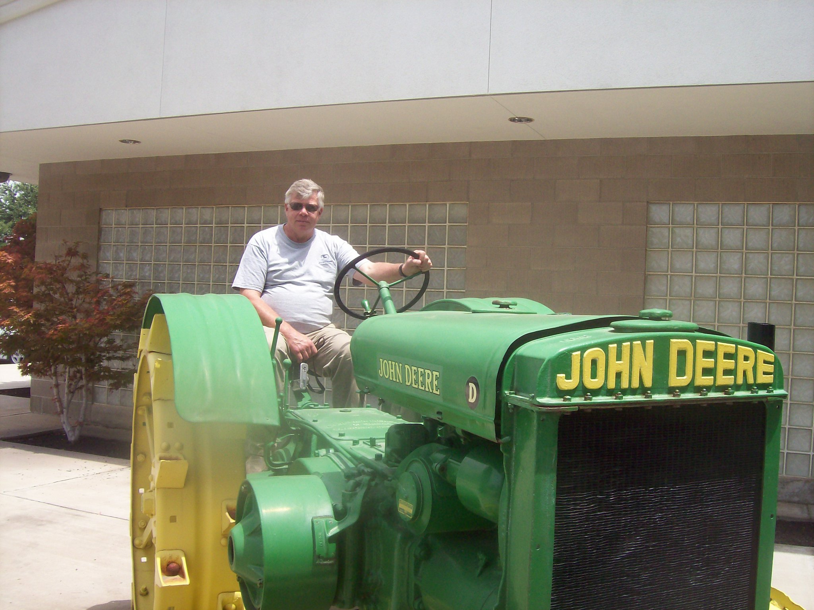

Audience
People living in the Preston area who need to check the weather. Young parents, farmers, older couples. These are people who do things during the day that may be affected by changes in the weather. Parents and people who work outside will plan their activities around rain and extreme temperatures. Older couples also spend time outside and are more heavily affected by changes in weather and will need to adjust their plans accordingly.
Personas
Abigail Harrison
Abigail Harrison is a young mom who has to drive her oldest child to the elementary school every day. She has two younger children still at home who love to play outside and spend time at the park down the street. She checks weatherdaybyday.com everyday to make sure there aren't any unexpected thunderstorms or abnormally cold temperatures during the day.
Joe Martin
Joe Martin- A retired farmer. He and his wife still live on a lot of land and have a large garden in the back that they are very fond of. They like to take daily walks in their area, especially when the weather is nice. Each night they watch the sunset from their back porch. On weekends, their children and grandchildren come to visit for lunch on Sundays.
